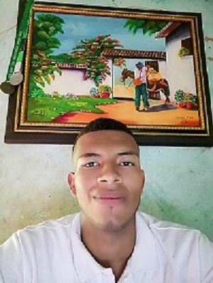

Conceptos basicos de GIT Y GITHUB
Nombre: Deismar Rene Muñoz LemusPagina Web: https://www.unad.edu.co/Acceso a Correo Electronico: https://informacion.unad.edu.co/correoUniversidad Nacional Abierta y a Distancia "UNAD"CEAD: La Plata HuilaPrograma: Ingenieria de sistemasFecha de creación: 04 de septiembre de 2020Datos de contacto:Skype:3234797484Correo Institucional: drmunozle@unadvirtual.edu.coCorreo personal: deismarrene2000@gmail.comTelefono: 3234797484twitter: @DeismarRene |
 |